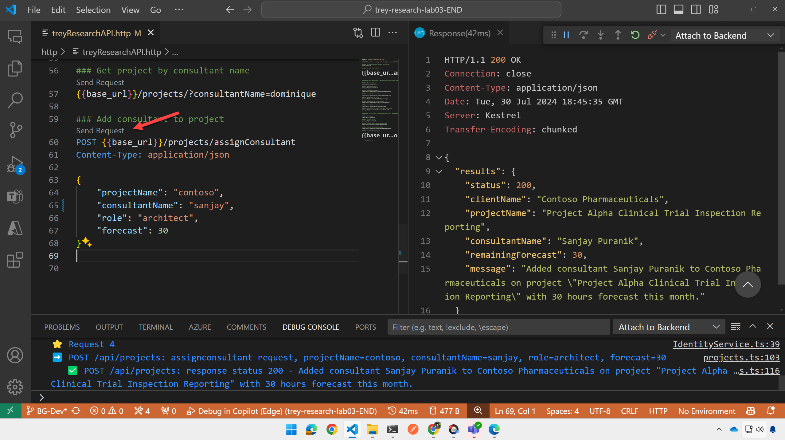
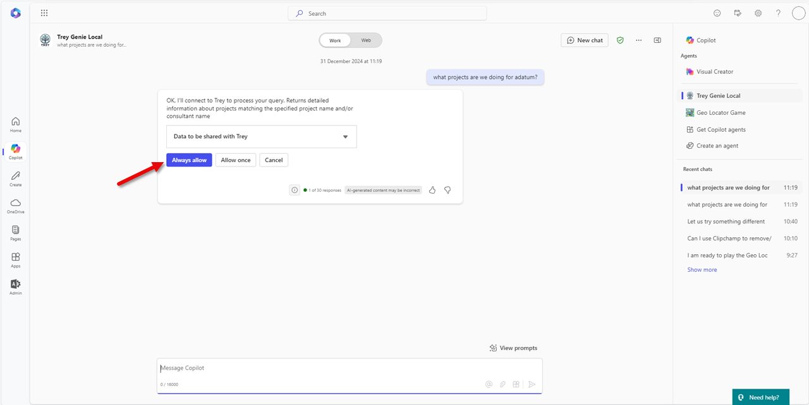
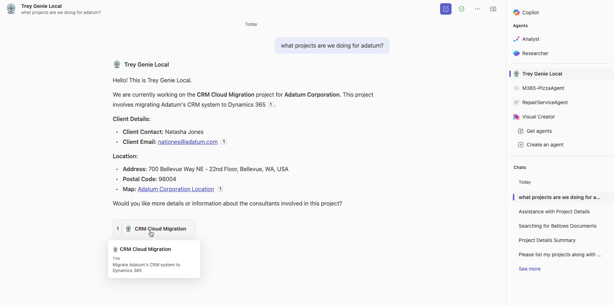

ラボ E4 - API とプラグインを拡張する
このラボでは、API に追加の REST 呼び出しを実装し、それらを API プラグイン パッケージに追加して Copilot から呼び出せるようにします。これにより、Copilot 用に API を定義する際に必要なすべての場所を学習できます。
Microsoft 365 が AI モデルとオーケストレーションを提供する宣言型エージェントを構築したい場合は、これらのラボを実施してください。
- 🏁 はじめに
- 🔧 セットアップ
- 🧰 宣言型エージェントの基礎
- 🛠️ API をゼロから構築して統合する
- 🔐 認証
- 🔌 統合
演習 1: /projects リソースを追加する
この演習では Trey Research API に /projects リソースを追加します。これにより、GET 要求でプロジェクト情報を取得し、POST 要求でコンサルタントをプロジェクトに割り当てられるようになります。その過程で、新しい projects API 呼び出しを追加するために appPackage/trey-Plugin.json と trey-definition.json ファイルをどのように変更するかを学びます。
手順 1: Azure Function のコードを追加する
まず /src/functions フォルダーに projects.ts という新しいファイルを作成します。その後、こちらのコードをコピーしてください。
これにより Trey Research のプロジェクトへアクセスする Azure Function が実装されます。
手順 2: Azure Function のコードを確認する (任意)
コードを少し見てみましょう。
これはバージョン 4 の Azure Function であり、NodeJS の従来の Express コードに非常によく似ています。projects クラスは HTTP リクエスト トリガーを実装しており、"/projects" パスにアクセスしたときに呼び出されます。その後、メソッドとルートを定義するインライン コードが続きます。現時点ではアクセスは匿名です。認証を追加する方法については 認証のパスウェイ を参照してください。
export async function projects(
req: HttpRequest,
context: InvocationContext
): Promise<Response> {
// ...
}
app.http("projects", {
methods: ["GET", "POST"],
authLevel: "anonymous",
route: "projects/{*id}",
handler: projects,
});
クラスには GET と POST を処理する switch 文が含まれています。URL パス (プロジェクト ID)、クエリ文字列 (?projectName=foo など)、およびリクエスト ボディ (POST の場合) からパラメーターを取得します。その後、開始時点のソリューションに含まれていた ProjectApiService を使用してプロジェクト データへアクセスします。また、各リクエストに対するレスポンスを送り、デバッグ コンソールへログを出力します。
手順 3: HTTP テスト リクエストを追加する
次に、新しいリクエストを http/treyResearchAPI.http ファイルに追加して試してみましょう。ファイルを開き、以下のテキストを末尾に追加して保存します。あるいは 更新済みファイルをコピー しても構いません。
########## /api/projects - working with projects ##########
### Get all projects
{{base_url}}/projects
### Get project by id
{{base_url}}/projects/1
### Get project by project or client name
{{base_url}}/projects/?projectName=supply
### Get project by consultant name
{{base_url}}/projects/?consultantName=dominique
### Add consultant to project
POST {{base_url}}/projects/assignConsultant
Content-Type: application/json
{
"projectName": "contoso",
"consultantName": "sanjay",
"role": "architect",
"forecast": 30
}
手順 4: 新しいリソースをテストする
前のラボからアプリがまだ実行中の場合はデバッガーを停止して再起動します。そうでない場合は通常どおりデバッガーを開始し、アプリの起動を待ちます。準備が整うと Agents Toolkit がブラウザーを開き Microsoft 365 へのログインを求めます。ブラウザーは最小化して構いませんが、閉じるとデバッガーが停止します。
新しいリクエストを送信してみると、Trey Research のプロジェクト詳細が表示されたり、POST リクエストでプロジェクトに新しいコンサルタントを割り当てたりできるはずです。

演習 2: アプリケーション パッケージに projects を追加する
API プラグインのアプリケーション パッケージは zip ファイルで、Copilot が API を利用するために必要な情報をすべて含んでいます。
この演習では、新しい /projects リソースに関する情報をアプリ パッケージに追加します。
手順 1: Open API Specification ファイルを更新する
アプリケーション パッケージの重要な構成要素に Open API Specification (OAS) 定義ファイルがあります。OAS は REST API を記述するための標準形式を定義し、一般的な “Swagger” 定義を基にしています。
まず /appPackage フォルダーの trey-definition.json ファイルを開きます。
大きな JSON ファイルの編集は難しい場合がありますので、こちらの更新済みファイルをコピー して保存してください。以降の手順で変更点を確認できます。
手順 2: 変更点を確認する (任意)
最初の変更点は paths コレクションに /projects/ パスを追加したことです。
ここでは /projects/ リソースを取得する際に利用可能なクエリ文字列、データ型、必須フィールドがすべて記述されています。また、ステータス 200 (成功) と 404 (失敗) のレスポンスで返されるデータも定義されています。
"/projects/": {
"get": {
"operationId": "getProjects",
"summary": "Get projects matching a specified project name and/or consultant name",
"description": "Returns detailed information about projects matching the specified project name and/or consultant name",
...
さらに /projects/assignConsultant のパスも追加され、POST リクエストを処理します。
説明文は重要です！
このファイルを含むアプリケーション パッケージ内のすべてのファイルはインテリジェンスによって読み取られます。人工的とはいえ知的であるため、説明文を読めます！
API を適切に利用してもらうために、このファイルおよびすべてのアプリケーション パッケージ ファイル内でわかりやすい名前と説明を使用してください。
手順 3: プラグイン定義ファイルに projects を追加する
次に /appPackage フォルダー内の trey-plugin.json ファイルを開きます。このファイルには OAS 定義ファイルに含まれない追加情報が記述されています。trey-plugin.json の内容を こちらの更新済み JSON に置き換えてください。
手順 4: プラグイン定義ファイルの変更点を確認する (任意)
プラグイン JSON ファイルには functions のコレクションが含まれます。各 function は API 呼び出しの種類に対応しており、Copilot は実行時にこれらの function を選択します。
新しい trey-plugin.json には getProjects と postAssignConsultant の新しい function が含まれています。たとえば getProjects は次のとおりです。
{
"name": "getProjects",
"description": "Returns detailed information about projects matching the specified project name and/or consultant name",
"capabilities": {
"response_semantics": {
"data_path": "$.results",
"properties": {
"title": "$.name",
"subtitle": "$.description"
}
}
}
},
response_semantics には Copilot のオーケストレーターにレスポンス ペイロードの解釈方法を指示する情報が含まれています。これにより、生のレスポンス データをレンダリングや追加処理に利用できる意味のあるコンテンツへ変換できます。
POST リクエストにも同様の function があります。
{
"name": "postAssignConsultant",
"description": "Assign (add) consultant to a project when name, role and project name is specified.",
"capabilities": {
"response_semantics": {
"data_path": "$",
"properties": {
"title": "$.results.clientName",
"subtitle": "$.results.status"
}
},
"confirmation": {
"type": "AdaptiveCard",
"title": "Assign consultant to a project when name, role and project name is specified.",
"body": "**ProjectName**: {{function.parameters.projectName}}\n* **ConsultantName**: {{function.parameters.consultantName}}\n* **Role**: {{function.parameters.role}}\n* **Forecast**: {{function.parameters.forecast}}"
}
}
}
Adaptive Card を使用した確認カードが含まれており、POST リクエストを実行する前にユーザーへ確認を表示します。
下へスクロールすると、プラグインの種類、OAS 定義ファイルの場所、function のリストを定義する runtimes オブジェクトが確認できます。新しい function がリストに追加されています。
"runtimes": [
{
"type": "OpenApi",
"auth": {
"type": "None"
},
"spec": {
"url": "trey-definition.json"
},
"run_for_functions": [
"getConsultants",
"getUserInformation",
"getProjects",
"postBillhours",
"postAssignConsultant"
]
}
],
最後に、プロンプト候補として表示される conversation_starters にプロジェクト関連のエントリが追加されています。
"capabilities": {
"localization": {},
"conversation_starters": [
{
"text": "What Trey projects am i assigned to?"
},
{
"text": "Charge 5 hours to the Contoso project for Trey Research"
},
{
"text": "Which Trey consultants are Azure certified?"
},
{
"text": "Find a Trey consultant who is available now and has Python skills"
},
{
"text": "Add Avery as a developer on the Contoso project for Trey"
}
]
}
演習 3: Copilot でプラグインをテストする
アプリケーションをテストする前に、appPackage\manifest.json ファイルでアプリ パッケージの manifest バージョンを更新します。以下の手順に従ってください。
-
プロジェクトの
appPackageフォルダー内にあるmanifest.jsonファイルを開きます。 -
JSON 内の
versionフィールドを探します。以下のようになっています。
json "version": "1.0.0" -
バージョン番号を小さくインクリメントします。例:
json "version": "1.0.1" -
変更後、ファイルを保存します。
手順 1: アプリケーションを再起動する
アプリを停止して再起動し、アプリケーション パッケージを再デプロイさせます。
Microsoft Teams が開きます。Copilot に戻ったら右側のフライアウト 1️⃣ を開き、以前のチャットとエージェントを表示して Trey Genie Local エージェント 2️⃣ を選択します。

手順 2: Trey Genie へプロンプトを送る
次のようなプロンプトを試してみてください: 「adatum のために行っているプロジェクトは何ですか？」

GET リクエストでも確認カードが表示される場合があります。表示されたらリクエストを許可してプロジェクト詳細を表示してください。

おめでとうございます！
API プラグインの強化が完了しました。しかしご覧のとおり、引用カードは非常にシンプルです。次のラボでは、引用とレスポンスを Adaptive Card でリッチに表示する方法を学びましょう。